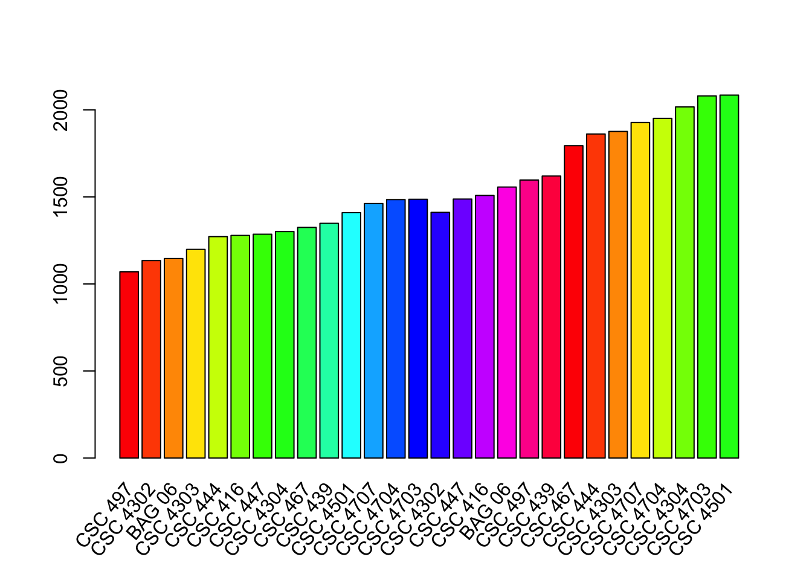
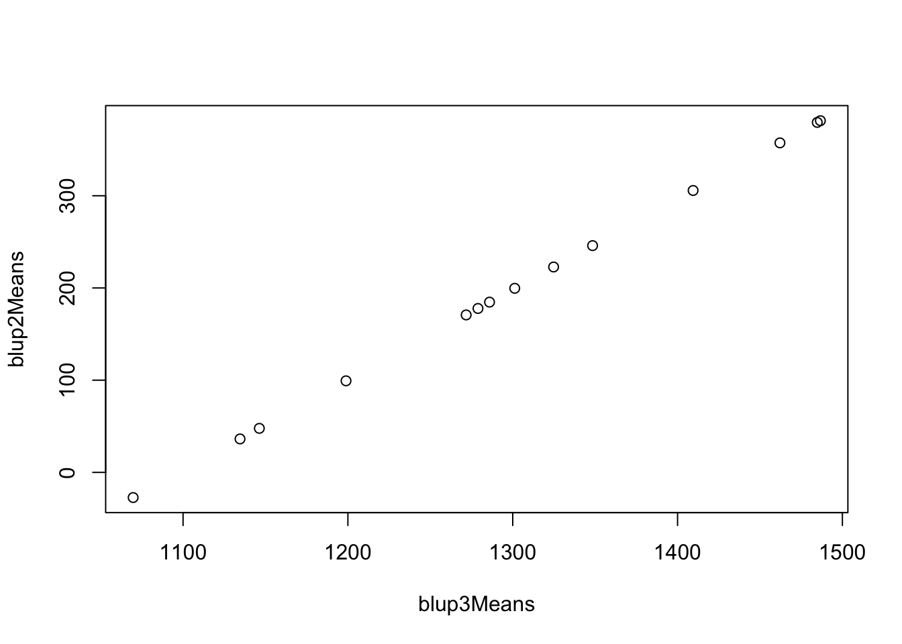

Drought Analysis
Chris Simoes
5/11/2021
Last updated: 2021-06-15
Checks: 6 1
Knit directory: Drought/
This reproducible R Markdown analysis was created with workflowr (version 1.6.2). The Checks tab describes the reproducibility checks that were applied when the results were created. The Past versions tab lists the development history.
The R Markdown file has unstaged changes. To know which version of the R Markdown file created these results, you’ll want to first commit it to the Git repo. If you’re still working on the analysis, you can ignore this warning. When you’re finished, you can run wflow_publish to commit the R Markdown file and build the HTML.
Great job! The global environment was empty. Objects defined in the global environment can affect the analysis in your R Markdown file in unknown ways. For reproduciblity it’s best to always run the code in an empty environment.
The command set.seed(20210507) was run prior to running the code in the R Markdown file. Setting a seed ensures that any results that rely on randomness, e.g. subsampling or permutations, are reproducible.
Great job! Recording the operating system, R version, and package versions is critical for reproducibility.
Nice! There were no cached chunks for this analysis, so you can be confident that you successfully produced the results during this run.
Great job! Using relative paths to the files within your workflowr project makes it easier to run your code on other machines.
Great! You are using Git for version control. Tracking code development and connecting the code version to the results is critical for reproducibility.
The results in this page were generated with repository version c9f2638. See the Past versions tab to see a history of the changes made to the R Markdown and HTML files.
Note that you need to be careful to ensure that all relevant files for the analysis have been committed to Git prior to generating the results (you can use wflow_publish or wflow_git_commit). workflowr only checks the R Markdown file, but you know if there are other scripts or data files that it depends on. Below is the status of the Git repository when the results were generated:
Ignored files:
Ignored: .DS_Store
Ignored: .RData
Ignored: .Rhistory
Ignored: .Rproj.user/
Untracked files:
Untracked: data/analise_macro_area_foliar_local_1.csv
Unstaged changes:
Modified: analysis/droughtAnalysis.Rmd
Note that any generated files, e.g. HTML, png, CSS, etc., are not included in this status report because it is ok for generated content to have uncommitted changes.
These are the previous versions of the repository in which changes were made to the R Markdown (analysis/droughtAnalysis.Rmd) and HTML (docs/droughtAnalysis.html) files. If you’ve configured a remote Git repository (see ?wflow_git_remote), click on the hyperlinks in the table below to view the files as they were in that past version.
| File | Version | Author | Date | Message |
|---|---|---|---|---|
| Rmd | c9f2638 | chris263 | 2021-05-15 | adding model comparison and coefficeint of regression |
| html | c9f2638 | chris263 | 2021-05-15 | adding model comparison and coefficeint of regression |
| Rmd | 90f85d8 | chris263 | 2021-05-12 | updating html |
| html | 90f85d8 | chris263 | 2021-05-12 | updating html |
| Rmd | 7e34c23 | chris263 | 2021-05-11 | adding project to identify varieties tolerant to drought |
| html | 7e34c23 | chris263 | 2021-05-11 | adding project to identify varieties tolerant to drought |
Script setup
Install packages, start the README.md, set the random seed
Defining Main Settings and Simulating data
Reading and simulating data. 2 Locations, 12 varieties, 3 rep, 2 treatments, 3 times (days).
Attaching package: 'dplyr'The following objects are masked from 'package:stats':
filter, lagThe following objects are masked from 'package:base':
intersect, setdiff, setequal, union
| Version | Author | Date |
|---|---|---|
| 7e34c23 | chris263 | 2021-05-11 |
Modeling with 3 different interactions
Model 1
Model 1 takes treatments and varieties as fixed effect. The interaction treatments per variety is taken as random effect.
library(tidyr)
library(lme4)Loading required package: Matrix
Attaching package: 'Matrix'The following objects are masked from 'package:tidyr':
expand, pack, unpacklibrary(emmeans)
library(grid)
library(gridBase)
#creating a column named "centered" for avg_area_total
# dataf <- dataf%>%mutate("pheno" = scale(dataf$avg_area_total, scale=TRUE))
model1 <- lmer(avg_area_total~irrigacao+(1|irrigacao:cultivar), data=dataf)
summary(model1)Linear mixed model fit by REML ['lmerMod']
Formula: avg_area_total ~ irrigacao + (1 | irrigacao:cultivar)
Data: dataf
REML criterion at convergence: 6775.2
Scaled residuals:
Min 1Q Median 3Q Max
-2.1557 -0.4643 0.1531 0.6789 2.3785
Random effects:
Groups Name Variance Std.Dev.
irrigacao:cultivar (Intercept) 559.9 23.66
Residual 624200.2 790.06
Number of obs: 420, groups: irrigacao:cultivar, 28
Fixed effects:
Estimate Std. Error t value
(Intercept) 1825.19 54.89 33.255
irrigacaonao_irrigado -490.37 77.62 -6.318
Correlation of Fixed Effects:
(Intr)
irrgcn_rrgd -0.707#getting the random effect
blups_m1 <- ranef(model1)$irrigacao
blups_m1 <- data.frame(blups_m1)
colnames(blups_m1)<-"blups"
#Formating the data for plotting
blup <- blups_m1%>%mutate("tratVar" = rownames(blups_m1))
df <- data.frame(x = blup$tratVar)
dfinal <- df %>% separate(x, c("treatments","variety"), sep = ":")
blup_1_final <- cbind(blup,dfinal)
blup_1_final blups tratVar treatments variety
1 -2.89504478 irrigado:BAG 06 irrigado BAG 06
2 -3.55366593 irrigado:CSC 416 irrigado CSC 416
3 -4.87480348 irrigado:CSC 4302 irrigado CSC 4302
4 1.45014579 irrigado:CSC 4303 irrigado CSC 4303
5 3.36827758 irrigado:CSC 4304 irrigado CSC 4304
6 -2.03397239 irrigado:CSC 439 irrigado CSC 439
7 1.25096277 irrigado:CSC 444 irrigado CSC 444
8 -3.83286912 irrigado:CSC 447 irrigado CSC 447
9 4.28820839 irrigado:CSC 4501 irrigado CSC 4501
10 0.33441228 irrigado:CSC 467 irrigado CSC 467
11 4.22751824 irrigado:CSC 4703 irrigado CSC 4703
12 2.47357099 irrigado:CSC 4704 irrigado CSC 4704
13 2.14601898 irrigado:CSC 4707 irrigado CSC 4707
14 -2.34875932 irrigado:CSC 497 irrigado CSC 497
15 -2.55231292 nao_irrigado:BAG 06 nao_irrigado BAG 06
16 -0.35346353 nao_irrigado:CSC 416 nao_irrigado CSC 416
17 -2.74647389 nao_irrigado:CSC 4302 nao_irrigado CSC 4302
18 -1.68058460 nao_irrigado:CSC 4303 nao_irrigado CSC 4303
19 0.01606424 nao_irrigado:CSC 4304 nao_irrigado CSC 4304
20 0.79903179 nao_irrigado:CSC 439 nao_irrigado CSC 439
21 -0.47232616 nao_irrigado:CSC 444 nao_irrigado CSC 444
22 -0.23731429 nao_irrigado:CSC 447 nao_irrigado CSC 447
23 1.80990283 nao_irrigado:CSC 4501 nao_irrigado CSC 4501
24 0.40693617 nao_irrigado:CSC 467 nao_irrigado CSC 467
25 3.09002988 nao_irrigado:CSC 4703 nao_irrigado CSC 4703
26 3.05868153 nao_irrigado:CSC 4704 nao_irrigado CSC 4704
27 2.68319875 nao_irrigado:CSC 4707 nao_irrigado CSC 4707
28 -3.82136981 nao_irrigado:CSC 497 nao_irrigado CSC 497min1 <- round(min(blup_1_final$blups)-1,1)
max1 <- round(max(blup_1_final$blups)+1.5,1)
blup_1_final <- blup_1_final[with(blup_1_final, order(treatments,blups)),]
# View(blup_1_final)
# Taking adjusted means. The ideal is take the adjusted mean per treatment.
# adj1 <- summary(lsmeans(model1, "variety"))
# ## Plot, but suppress the labels
midpts <- barplot(blup_1_final$blups, col=rainbow(20), names.arg="", beside= TRUE)
## Use grid to add the labels
vps <- baseViewports()
pushViewport(vps$inner, vps$figure, vps$plot)
grid.text(blup_1_final$varieties,
x = unit(midpts, "native"), y=unit(-1, "lines"),
just="right", rot=50)
my_bar <- barplot(blup_1_final$blups , border=F , names.arg=blup_1_final$variety ,
las=2 ,
col=c(rgb(0.3,0.1,0.4,0.6) , rgb(0.3,0.5,0.4,0.6) , rgb(0.3,0.9,0.4,0.6) , rgb(0.3,0.9,0.4,0.6)) ,
ylim=c(min1,max1) ,
main="" )
# Add abline
# abline(v=5 , col="grey")Model 2
Now, filtering for the drought confdition. Model 2 takes treatments, blocks and days as fixed effect. Only variety is taken as random effect.
data2 <- dataf%>%filter(irrigacao==UQ("nao_irrigado"))
model2 <- lmer(avg_area_total~ rep + avaliacao + (1|cultivar), data=data2)
summary(model2)Linear mixed model fit by REML ['lmerMod']
Formula: avg_area_total ~ rep + avaliacao + (1 | cultivar)
Data: data2
REML criterion at convergence: 2978.8
Scaled residuals:
Min 1Q Median 3Q Max
-2.85628 -0.70443 0.08968 0.75923 2.29565
Random effects:
Groups Name Variance Std.Dev.
cultivar (Intercept) 21265 145.8
Residual 87307 295.5
Number of obs: 210, groups: cultivar, 14
Fixed effects:
Estimate Std. Error t value
(Intercept) 198.676 79.373 2.503
rep -3.951 24.972 -0.158
avaliacao 381.348 14.418 26.450
Correlation of Fixed Effects:
(Intr) rep
rep -0.629
avaliacao -0.545 0.000blups_m2 <- ranef(model2)$cultivar
colnames(blups_m2)<-"blups"
#Taking adjusted means
adj2 = coef(model2)$cultivar
#Formating the data for plotting
blup2 <- blups_m2%>%mutate("variety" = rownames(blups_m2), "adjMeans"= adj2[,1])
blup2 <- blup2[with(blup2, order(blups)),]
## Plot, but suppress the labels
midpts <- barplot(blup2$adjMeans, col=rainbow(20), names.arg="")
## Use grid to add the labels
vps <- baseViewports()
pushViewport(vps$inner, vps$figure, vps$plot)
grid.text(blup2$variety,
x = unit(midpts, "native"), y=unit(-1, "lines"),
just="right", rot=50)
| Version | Author | Date |
|---|---|---|
| 7e34c23 | chris263 | 2021-05-11 |
Model 3
Here I’m taking the whole data (all tratments). Model 3 takes blocks as fixed effect, then makes autoregressive residual (AR1) for the days (It means the correlation residual due to measurements have been made on the same plant). Then variety is a random effect combined with treatments.
library(sommer)Loading required package: MASS
Attaching package: 'MASS'The following object is masked from 'package:dplyr':
selectLoading required package: latticeLoading required package: crayon# data2 <- data1%>%filter(treatments==UQ("Drought"))
data3<-data.frame(variety=as.factor(dataf$cultivar),
# location=as.factor(lColumn),
blocks=as.factor(dataf$rep),
treatments=as.factor(dataf$irrigacao),
days=as.factor(dataf$avaliacao),
daysDouble=as.double(dataf$avaliacao),
pheno=as.double(dataf$avg_area_total))
model3 <- mmer(pheno~blocks, random=~vs(days, Gu=AR1(days, rho=0.3)) + vs(treatments,variety), rcov=~units, data=data3, verbose = FALSE)
summary(model3)==================================================================
Multivariate Linear Mixed Model fit by REML
************************* sommer 4.1 *************************
==================================================================
logLik AIC BIC Method Converge
Value 167.6875 -329.3749 -317.2542 NR TRUE
==================================================================
Variance-Covariance components:
VarComp VarCompSE Zratio Constraint
u:days.pheno-pheno 577656 409429 1.411 Positive
irrigado:variety.pheno-pheno 240062 93474 2.568 Positive
nao_irrigado:variety.pheno-pheno 23964 11761 2.038 Positive
units.pheno-pheno 89171 6419 13.892 Positive
==================================================================
Fixed effects:
Trait Effect Estimate Std.Error t.value
1 pheno (Intercept) 1416.37 430.69 3.289
2 pheno blocks2 -123.04 35.69 -3.447
3 pheno blocks3 -97.55 35.69 -2.733
==================================================================
Groups and observations:
pheno
u:days 5
irrigado:variety 14
nao_irrigado:variety 14
==================================================================
Use the '$' sign to access results and parametersblups_m3D <- as.data.frame(model3$U$`nao_irrigado:variety`)
blups_m3W <- as.data.frame(model3$U$`irrigado:variety`)
blups_m3 <- rbind(blups_m3D,blups_m3W)
colnames(blups_m3)<-"blups"
#Taking adjusted means
listMeans <- predict.mmer(model3,classify = c("treatments","variety"))iteration LogLik wall cpu(sec) restrained
1 167.688 16:13:9 0 0
2 167.688 16:13:9 0 0
3 167.688 16:13:10 1 0
4 167.688 16:13:10 1 0adj3 <- listMeans$pvals$predicted.value
adj3_names <- listMeans$pvals$variety
#preparing column with treatments
varieties <- unique(dataf$cultivar)
trt_Drought <- c(rep("nao_irrigado",length(varieties)))
trt_Wattered <- c(rep("irrigado",length(varieties)))
trt_names <- append(trt_Drought,trt_Wattered)
#Formating the data for plotting
blup3 <- blups_m3%>%mutate("variety" = adj3_names, "adjMeans"=adj3, "treatments"=trt_names)
blup3 <- blup3[with(blup3, order(treatments, adjMeans)),]
# Plot, but suppress the labels
midpts <- barplot(blup3$adjMeans, col=rainbow(20), names.arg="")
# Use grid to add the labels
vps <- baseViewports()
pushViewport(vps$inner, vps$figure, vps$plot)
grid.text(blup3$variety,
x = unit(midpts, "native"), y=unit(-1, "lines"),
just="right", rot=50)
| Version | Author | Date |
|---|---|---|
| 7e34c23 | chris263 | 2021-05-11 |
Comparing Models
Here I am making a regression with adjusted means between model2 and model3.
# Ordering the data per variety
blup2 <- blup2[with(blup2, order(variety)),]
blup3 <- blup3[with(blup3, order(treatments, variety)),]
plt_dataf = data.frame(blup2Means=as.double(blup2$adjMeans),blup3Means=as.double(blup3$adjMeans[1:length(varieties)]))
m2m3 <- lm(blup2Means ~ blup3Means, data=plt_dataf)
summary(m2m3)
Call:
lm(formula = blup2Means ~ blup3Means, data = plt_dataf)
Residuals:
Min 1Q Median 3Q Max
-5.832e-13 -2.569e-13 9.636e-14 2.173e-13 3.849e-13
Coefficients:
Estimate Std. Error t value Pr(>|t|)
(Intercept) -1.076e+03 9.216e-13 -1.167e+15 <2e-16 ***
blup3Means 9.802e-01 7.055e-16 1.389e+15 <2e-16 ***
---
Signif. codes: 0 '***' 0.001 '**' 0.01 '*' 0.05 '.' 0.1 ' ' 1
Residual standard error: 3.353e-13 on 12 degrees of freedom
Multiple R-squared: 1, Adjusted R-squared: 1
F-statistic: 1.931e+30 on 1 and 12 DF, p-value: < 2.2e-16with(plt_dataf,plot(blup3Means, blup2Means))
| Version | Author | Date |
|---|---|---|
| c9f2638 | chris263 | 2021-05-15 |
# abline(m2m3)
coef_m2m3 <- coefficients(m2m3)
r2 <- var(plt_dataf$blup2Means,plt_dataf$blup3Means)/sqrt(var(plt_dataf$blup2Means)*var(plt_dataf$blup3Means))
cat("The coefficent of regression between models 2 and 3 is", round(r2,4),"\n")The coefficent of regression between models 2 and 3 is 1 Note that the echo = FALSE parameter was added to the code chunk to prevent printing of the R code that generated the plot.
sessionInfo()R version 4.0.3 (2020-10-10)
Platform: x86_64-apple-darwin17.0 (64-bit)
Running under: macOS Big Sur 10.16
Matrix products: default
BLAS: /Library/Frameworks/R.framework/Versions/4.0/Resources/lib/libRblas.dylib
LAPACK: /Library/Frameworks/R.framework/Versions/4.0/Resources/lib/libRlapack.dylib
locale:
[1] en_US.UTF-8/en_US.UTF-8/en_US.UTF-8/C/en_US.UTF-8/en_US.UTF-8
attached base packages:
[1] grid stats graphics grDevices utils datasets methods
[8] base
other attached packages:
[1] sommer_4.1.3 crayon_1.3.4 lattice_0.20-41 MASS_7.3-53
[5] gridBase_0.4-7 emmeans_1.5.5-1 lme4_1.1-26 Matrix_1.3-2
[9] tidyr_1.1.2 dplyr_1.0.2
loaded via a namespace (and not attached):
[1] Rcpp_1.0.6 nloptr_1.2.2.2 pillar_1.4.7 compiler_4.0.3
[5] later_1.1.0.1 git2r_0.28.0 workflowr_1.6.2 tools_4.0.3
[9] boot_1.3-25 statmod_1.4.35 digest_0.6.27 nlme_3.1-151
[13] evaluate_0.14 lifecycle_0.2.0 tibble_3.0.4 pkgconfig_2.0.3
[17] rlang_0.4.10 rstudioapi_0.13 yaml_2.2.1 mvtnorm_1.1-1
[21] xfun_0.20 coda_0.19-4 stringr_1.4.0 knitr_1.30
[25] generics_0.1.0 fs_1.5.0 vctrs_0.3.6 hms_0.5.3
[29] rprojroot_2.0.2 tidyselect_1.1.0 glue_1.4.2 here_1.0.1
[33] R6_2.5.0 rmarkdown_2.6 minqa_1.2.4 readr_1.4.0
[37] purrr_0.3.4 magrittr_2.0.1 whisker_0.4 splines_4.0.3
[41] promises_1.1.1 ellipsis_0.3.1 htmltools_0.5.1.1 xtable_1.8-4
[45] httpuv_1.5.4 estimability_1.3 stringi_1.5.3